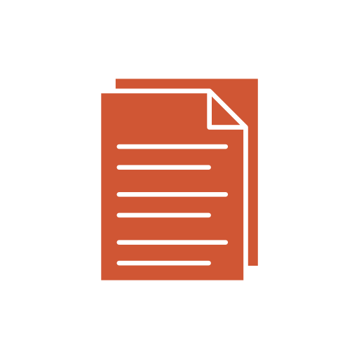
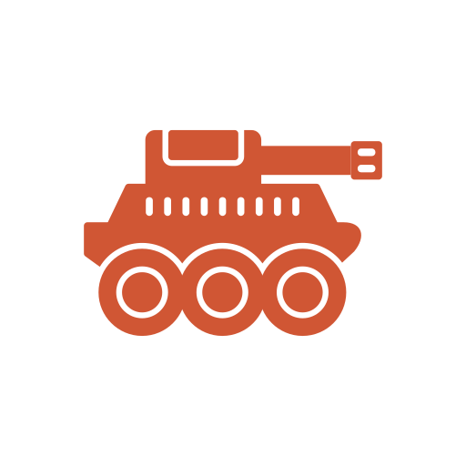
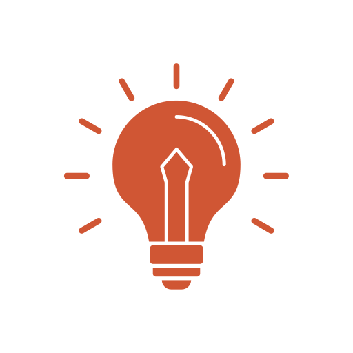

About Me
I am a dynamic junior IT professional with a demonstrated proficiency in communication and customer support. My utmost objective is to ensure that seeking IT support is a positive experience. I strive to educate my users about their equipment, because I believe technology should be accessible to all.
I am seeking career opportunities that will allow me to improve user experiences and dive into challenging projects that put my problem-solving skills to the test.
Education
B.A Public Relations, Illinois State University
Conferred May 2020, Magna Cum Laude

Clearances
Secret Level Security Clearance, Department of Defense
Valid until 2026
Civilian Experience
Help Desk Technician - Derse
September 2022 - Present
- Provides comprehensive technical support to over 550 geographically dispersed users, proficiently resolving more than 100 hardware and software issues per month.
- Updates employee information, reviews permissions access, performs password resets, and moves imaged computers into the appropriate OU within Active Directory.
- Assists in the efficient management, purchasing, and maintenance of an extensive inventory of more than 2,000 IT assets.
- Contributed to the successful implementation of Office 365 and Microsoft Teams, effectively streamlining company tools and spearheading enhanced communication.
- Researched and coordinated the installation of a new video conferencing system solution in the company's premier meeting room, enhancing user experience and success during client-facing meetings.
- Instructs company-wide training for Microsoft Teams and oversees the Teams Admin Center, to include adding external users and monitoring Teams Rooms.
Marketing Associate - Salute Mission Critical
May 2022 - April 2022
- Devised and implemented result-driven social media strategies, effectively bolstering brand engagement and improving website traffic.
- Employed analytics tools to monitor and evaluate social media metrics, gaining invaluable insights to optimize social media marketing campaigns.
Marketing & PR Manager - The Law Offices of Maureen Williams
July 2019 - March 2020
- Managed client outreach strategies to include social media, email campaigns, physical mail, check-up calls, reviews, monthly newsletters, local advertising, and other channels.
- Brainstormed innovative tactics and messaging to effectively engage potential clients, while nurturing relationships with existing and previous clients.

Military Experience
Public Affairs Specialist - Ukraine Deployment
July 2020 - May 2021
- Produced and disseminated press releases and video packages for social media platforms, effectively covering the unit's activities and events.
- Coordinated public affairs functions with multinational military counterparts, ensuring seamless collaboration.
- Acted as the Family Readiness Group Liaison, proactively keeping friends and families of deployed service members informed and engaged via monthly newsletters.
Public Affairs Specialist - Illinois Army National Guard
April 2016 - April 2023
- Generated captivating news releases, feature articles, videos, and editorials illustrating Army personnel and operations.
- Demonstrated outstanding leadership skills by guiding and managing the wellbeing of assigned Soldiers.
Volunteering
Caretaker - Camp Summit
Spring Break, March 2020
- Provided 70 hours of dedicated volunteer service, delivering comprehensive care to a group of 14 male campers aged 26-58, each with varying severities of special needs.
- Acquired profound insights into the unique challenges faced by individuals with special needs, including limited accessibility, societal prejudices, and daily obstacles.
- Developed a profound appreciation for the importance of inclusivity, empathy, and advocacy in the lives of those with special needs.

Skills
Technical Troubleshooting
Office 365 Implementation
Hardware/Software Support
Customer Service
Writing
Brand Awareness
User Experience
Communication

Hobbies
Tinkering with all things tech
Getting lost in a good book
Expanding my world with travel